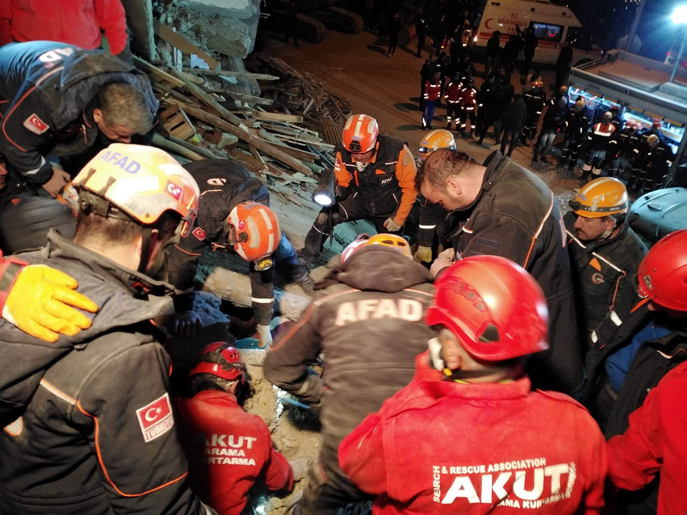
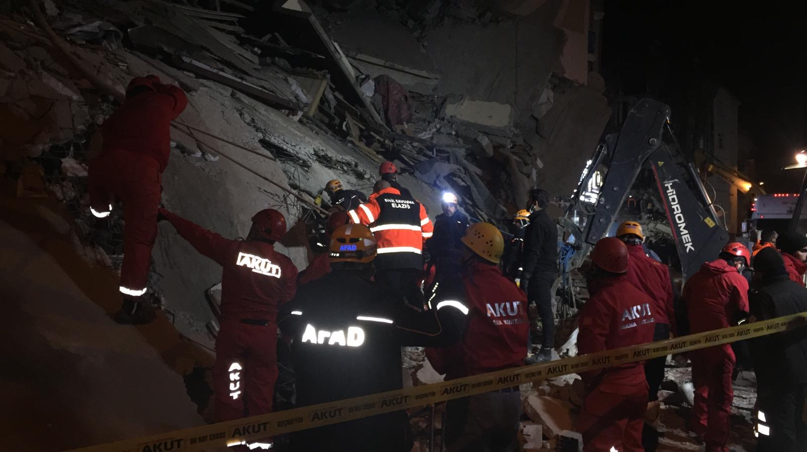
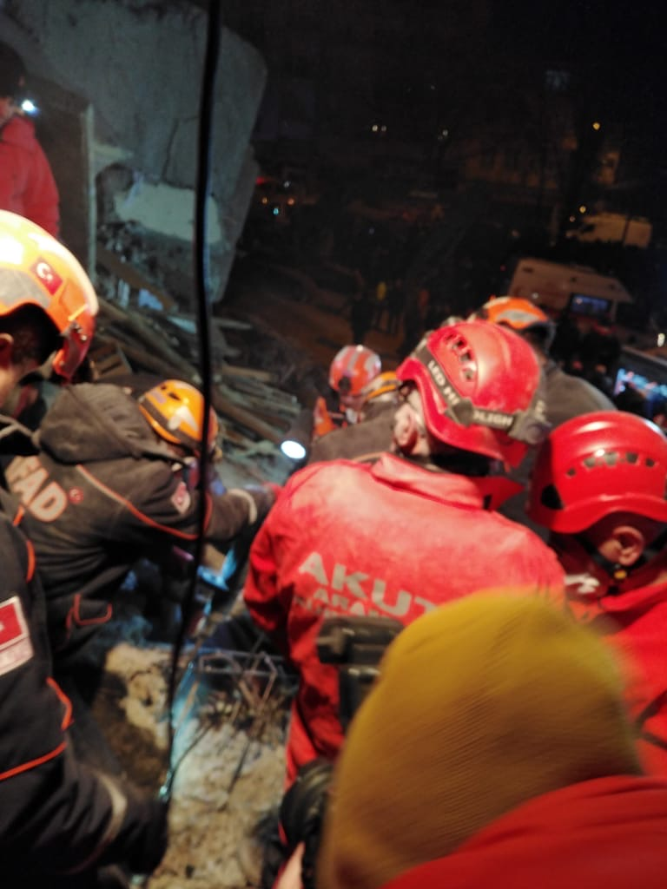

On Friday 24 January at 17:55h UTC (20:55 local time), an earthquake magnitude M6.7, 10 depth, has stricken Turkey with epicenter in Sivrice district, coordinates: 38° 22’39’’ 39°06’15’’ in Elazig region.
ERS duty system was activated and contacted the Disaster and Emergency Management Authority under the Turkish Ministry of Interior (AFAD), who initially reported 3 casualties and some collapsed structures (5 buildings). AFAD sent military support and Turkish aid organizations sent teams to the affected area and the Turkish Minister of Interior, Suleyman Soylu placed the incident at the level 3 of the country emergency response plan (level 4 will require international assistance). This means that the emergency requires assistance only at national level. However, over 20 Search & Rescue International teams were monitoring in the VOSOCC, including EMTs from Qatar, Jordan, Azerbaijan, China, NATO ERCC, etc.
Turkish national response plan seems relatively well applied and sufficient domestic capacity NFIs and food items were deployed as well as enough medical capacity.
AFAD and the Search & Rescue Teams (AKUT) are now posting information on the VOSOCC and ERS keeps monitoring the situation and remain on stand-by should the situation change.
Latest official figures report 14 casualties, 225 wounded and 30 victims have been located under the rubble. Fires are under control, teams from AFAD, AKUT National Medical Rescue, local fire brigades and municipal team are on the ground operating. The government has also deployed beds and shelters to the disaster area.
;;;;;;;;;;;;;;;;;;;;;;;;;;;;;;;;;;;;;;;;;;;;;;;;;;;;;;;;;;;;;;;;;;;;;;;;;;;;;;;;;;;
Information received from the Turkish Focal Point on rescue effort in Elazig:
Cumulative numbers:
- Total number of deceased: 41
- Total number of extricated live victims: 45
- Total number of wounded: 1607
- Total number of outpatient treatments: 1523
- Total number of wounded currently in hospital: 84
- Total number of wounded currently in ICUs: 16
AKUT numbers:
- Total number of extricated live victims: 3
- Total number of extricated deceased victims: 7
  